RIVET: Indoor Multimodal Dataset
Raw cascaded-radar signals and on-board outputs from the same acquisition, with RGB-D and inertial observations.
Abstract
Transparent glass can cause RGB-D measurements to describe backgrounds rather than physical barriers, motivating complementary radar sensing for indoor navigation and mapping. To support the development and evaluation of such multimodal approaches, we introduce RIVET, an indoor dataset pairing raw cascaded-radar signals and on-board outputs from the same acquisition with RGB-D and inertial observations.
The collection contains 14 sequences across three buildings, spanning approximately 2.49 km of reference-derived routes and 82,741 color–depth frame pairs. The routes include transparent and reflective surfaces, pedestrian activity, open paths, revisits, and multi-floor motion.
We provide RIVET-tools for processing and evaluation, pseudo-ground-truth trajectories, and 31 baseline configurations covering camera and radar motion estimation and image-based 3D reconstruction. The evaluated Doppler–inertial processing paths yield aggregate one-second translation relative pose errors of 0.13 m with raw-derived input and 0.77 m with on-board input, highlighting processing-dependent differences within paired recordings.

Each sequence occupies one directory
RIVET-tools connects the route-based collection to processing and evaluation through a common sequence interface. The implementation package mv3rkit provides lazy access to these streams. See the sequences
- EEEE-508Room views29.4 m62.3 s
- EEEE-250Room views34.2 m74.3 s
- EEEE-3FReturn near start93.2 m52.0 s
- EEEE-2FReturn near start82.0 m100.9 s
- EEEE-1FOpen lobby, glass48.8 m60.6 s
- EEEE-stair-AStair ascent47.1 m71.6 s
- EEEE-stair-BStair retraversal116.5 m124.7 s
- EEEE-stair-CStair retraversals168.0 m178.8 s
- EEEE-5FOpen floor, glass200.6 m225.2 s
- EEEE-5F-longMulti-floor descent279.6 m295.7 s
- EEEE-stair-longStair descent76.0 m104.3 s
- LILIB-1F-aLibrary retraversals538.0 m539.5 s
- LILIB-1F-bLibrary retraversal494.4 m524.3 s
- HAHANA-longReturn, glass passage277.4 m321.8 s
mmwave/raw/adc.bin # signed 16-bit complex, 1,572,864 bytes per frame
mmwave/raw/frames.csv # frame, t_rel_s, t_wall
mmwave/raw/format.json # frame dimensions, parser layout, radar profile
mmwave/radar_cfg.txt # transmitted device commands
mmwave/pointcloud/points.csv # detection coordinates, range, angles, Doppler
mmwave/pointcloud/frames.csv # frame counters, UART arrival times
mmwave/range_profile/ # 192-bin range profiles with frames.csv
mmwave/tracks/tracks.csv # tracking-header schema
mmwave/stats/frames.csv # processing times, CPU load, temperature
mmwave/tlv/packets.dat # preserved UART type–length–value packets
rgb/ depth/ # color JPEGs and native-grid depth arrays
imu/accel.csv imu/gyro.csv # host and device timestamps
intrinsic.txt extrinsic.txt # intrinsics, sensor transforms, timing
meta/session.json events.csv # counts, rates, recording events
meta/alignment.csv # export-time camera/radar association
from mv3rkit import Sequence
from mv3rkit.radar import dsp
seq = Sequence("RIVET/EE-1F")
cube = seq.radar.adc(100, 102) # (2, 256 chirps, 8 rx, 192 samples)
d = dsp.ddma_demodulate(cube) # d["tx"]: (2, 6 tx, 32 doppler, 8 rx, 192 range)
rgb, depth = seq.rgb(500), seq.depth(500)
pc = seq.pointcloud.frame(seq.nearest_pc_frame(500))
uv, z, inside = radar_to_pixels(pc[:, :3], seq.calib, "color")
Our contributions
Research uses of RIVET across visual geometry, radar perception, and multimodal fusion.

Continuous indoor routes with transparent surfaces and human activity
The collection spans three buildings and combines glass-lined corridors, reflective surfaces, pedestrian activity, and stair traversals with extended routes and varied platform motion. Sequence-level scene and motion indicators characterize these conditions and support the selection of recordings for targeted evaluation.
A multimodal dataset linking raw radar signals and on-board outputs
We provide 14 sequences spanning 2.49 km of reference-derived routes, pairing raw cascaded-radar ADC samples and recorded on-board products from the same acquisition with RGB-D and inertial observations.
A reusable processing and evaluation toolkit
We provide a common sequence interface for DDMA decoding, radar representations, temporal association, geometric projection, visualization, and export, retaining acquisition metadata and processing conventions. We complement this interface with pseudo-ground-truth trajectories and 31 baseline configurations spanning camera motion, radar motion, and image-based 3D reconstruction, with coverage, alignment, and scale reported explicitly.
Raw radar signals and on-board outputs
When both levels are recorded from the same acquisition, researchers can change a processing choice without collecting a different traversal.
Recording configuration
| Component | Configuration |
|---|---|
| Radar | Two AWR2243 devices, 6 Tx, 8 Rx, DDMA |
| Raw frame | 256 × 8 × 192 complex samples, 20 Hz |
| Fast-time sampling | 5 MS/s, 192 samples, 44.41 MHz/µs |
| Chirp timing | 5 µs idle, 45 µs ramp, 256 chirps |
| Range sampling | 0.0879 m per bin, 16.9 m sampled span |
| Doppler sampling | 0.152 m/s per bin, 32 bins per DDMA band |
| On-board products | Detections, profiles, statistics, packets |
| Color / depth | 640 × 480, nominal 30 Hz, native depth grid |
| IMU | Accelerometer and gyroscope, nominal 400 Hz |
| Extrinsics | Mechanical radar mount, factory camera calibration |
Rates are nominal configuration values. The evaluated raw front end uses a four-receiver sub-array, not the full virtual aperture.
Sequence inventory
| Sequence | Radar (s) | Raw frames | RGB-D frames | Path (m) | Route type |
|---|---|---|---|---|---|
| EE-508 | 62.3 | 1,245 | 1,858 | 29.4 | Room views |
| EE-250 | 74.3 | 1,486 | 2,188 | 34.2 | Room views |
| EE-3F | 52.0 | 1,040 | 3,760 | 93.2 | Return near start |
| EE-2F | 100.9 | 2,018 | 2,959 | 82.0 | Return near start |
| EE-1F | 60.6 | 1,211 | 1,798 | 48.8 | Open lobby, glass |
| EE-stair-A | 71.6 | 1,432 | 2,096 | 47.1 | Stair ascent |
| EE-stair-B | 124.7 | 2,494 | 3,666 | 116.5 | Stair retraversal |
| EE-stair-C | 178.8 | 3,575 | 5,224 | 168.0 | Stair retraversals |
| EE-5F | 225.2 | 4,504 | 6,573 | 200.6 | Open floor, glass |
| EE-5F-long | 295.7 | 5,914 | 8,723 | 279.6 | Multi-floor descent |
| EE-stair-long | 104.3 | 2,085 | 3,081 | 76.0 | Stair descent |
| LIB-1F-a | 539.5 | 10,789 | 15,876 | 538.0 | Library retraversals |
| LIB-1F-b | 524.3 | 10,486 | 15,401 | 494.4 | Library retraversal |
| HANA-long | 321.8 | 6,436 | 9,538 | 277.4 | Return, glass passage |
| Total | ≈2,736 | 54,715 | 82,741 | 2,485.2 |
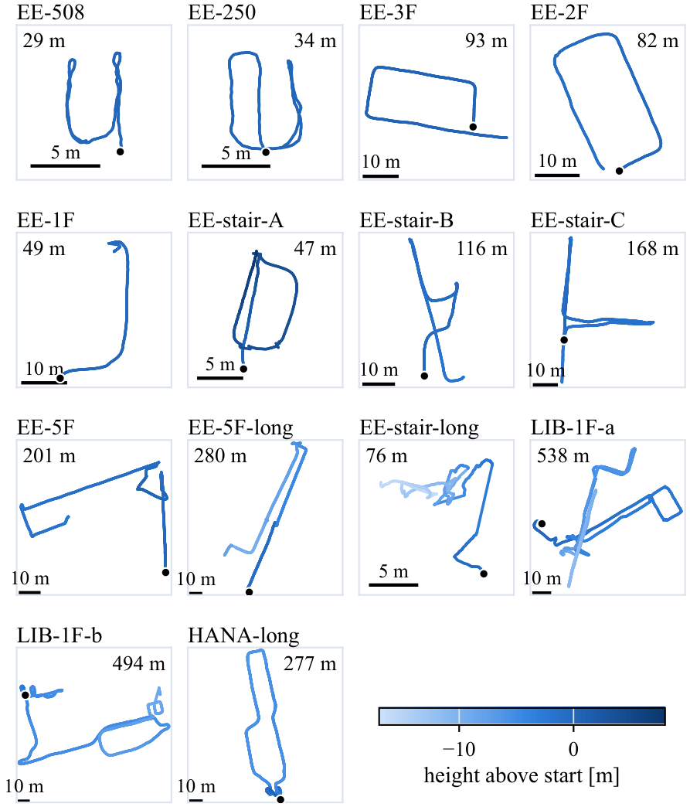
Indoor routes and optical surface conditions
The recordings combine transparent and reflective surfaces, human activity, and varied platform motion. Person presence has a duration-weighted mean of 54.2%, with sequence-level values reaching 64–74% on several lobby, library, and connecting routes.
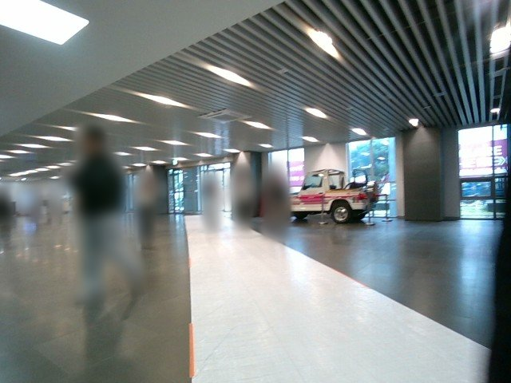
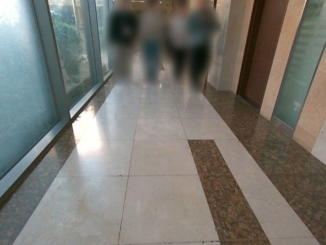
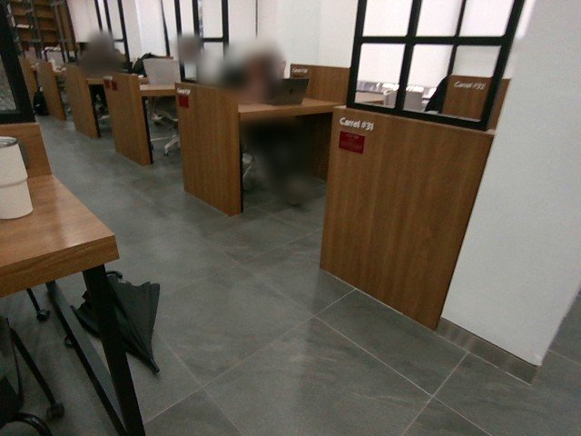


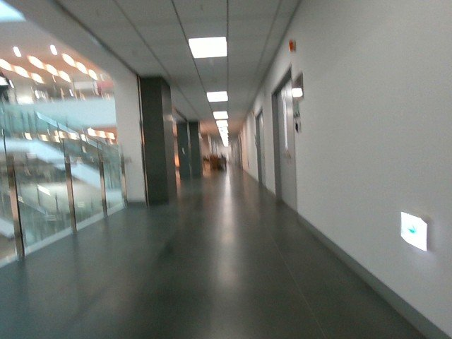


Sequence-level scene and motion indicators
Routes through transparent glass and reflective interiors were included to examine differences between visible scene content and physical surface observations. The radar–depth support disagreement and depth-hole indicators have duration-weighted means of 12.2% and 2.5%, respectively, characterizing measurement consistency and availability.
Glare and low-feature observations provide challenging visual conditions, while height changes and rapid turns extend the motion patterns beyond level, straight-line traversal.
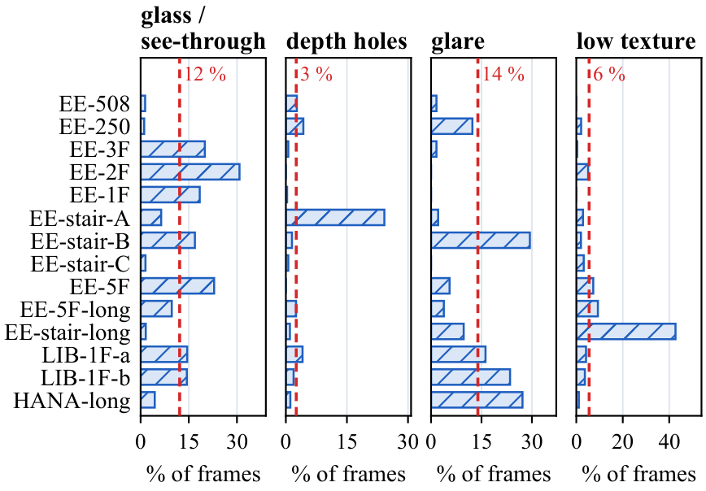
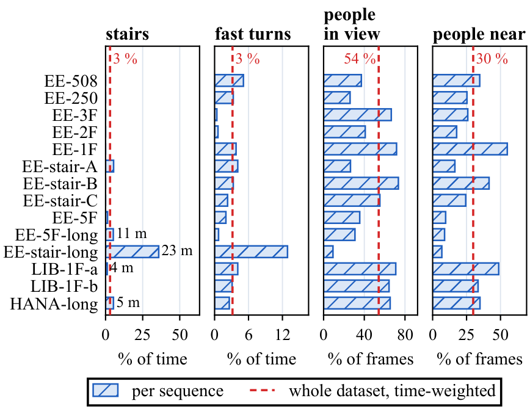
Radar and depth observations near a glass balustrade
The recorded on-board detections around the balustrade occupy the 3.3–4 m range, while parts of the depth image are unsupported or describe farther visible structure. Across the valid projected samples, the median residual is −0.10 m in two rooms and +1.09 m in three corridors, with 26.6% and 6.8%, respectively, lying within ±0.2 m.
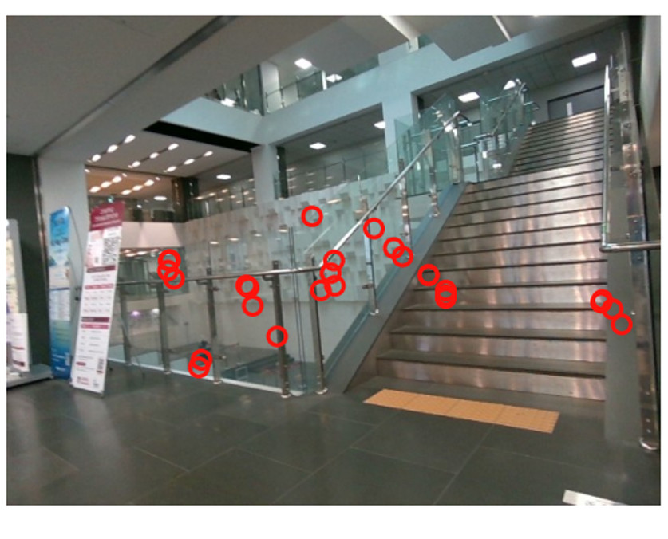
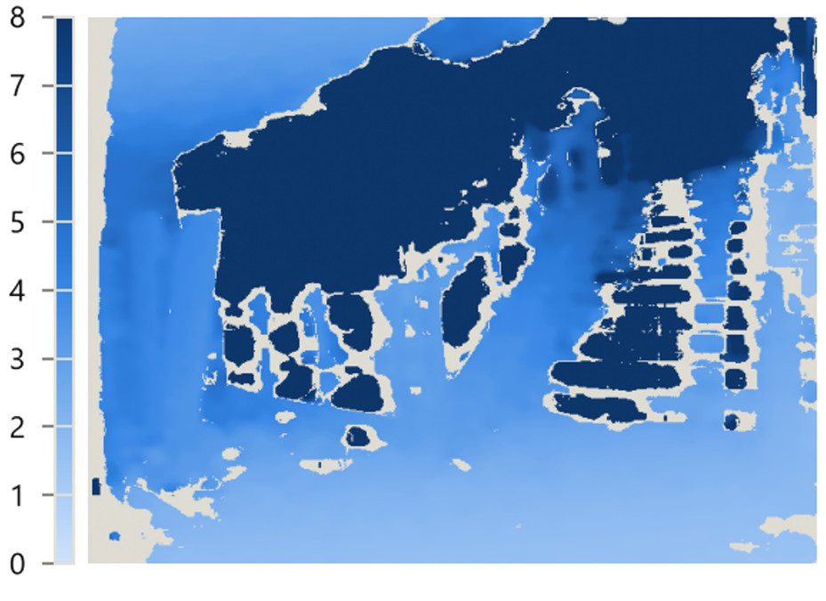
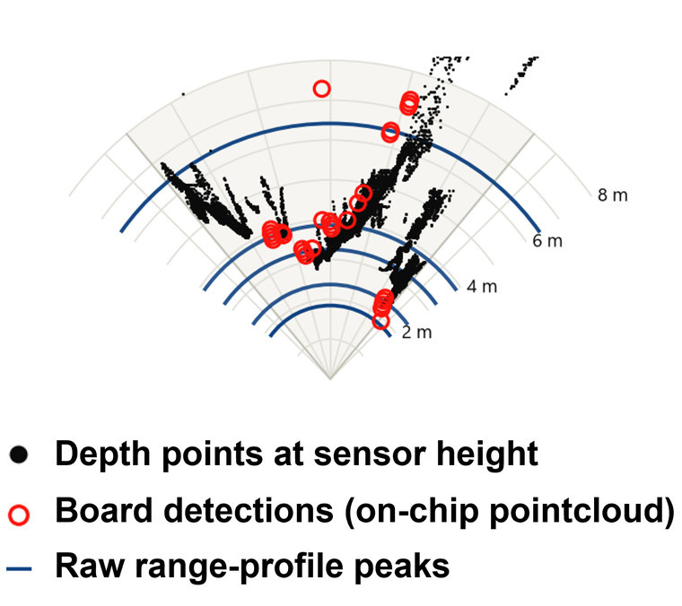
31 baseline configurations
11 camera motion configurations, seven radar pipelines with two input representations each, and six image-based reconstruction configurations.
DROID-SLAM RGB-D achieves an aggregate one-second translation RPE of 0.04 m and a mean rigid-aligned ATE of 4.06 m. The difference between small local errors and larger route-scale discrepancies shows why both measures are needed for continuous indoor traversals.
On EE-508, the displayed camera configurations achieve rigid-aligned ATEs of 0.22–0.41 m, compared with 1.4 m for the raw Doppler–IMU baseline. On EE-stair-C, the same radar–IMU baseline achieves 3.0 m ATE with 0.99 coverage, compared with 9.11 m for DROID-SLAM RGB-D and 15.50 m for ORB-SLAM3 RGB-D.
Across the 14-sequence summaries, raw input yields 0.13 m aggregate one-second translation RPE, compared with 0.77 m for on-board input. Raw forward-velocity correlations exceed the on-board correlations in each reported sequence summary.
π³ achieves the highest reported mean refined F1 at 5 cm of 0.33, while its median fitted scale is 4.95. MapAnything has a median recovered scale of 0.92 with a different geometry trade-off.
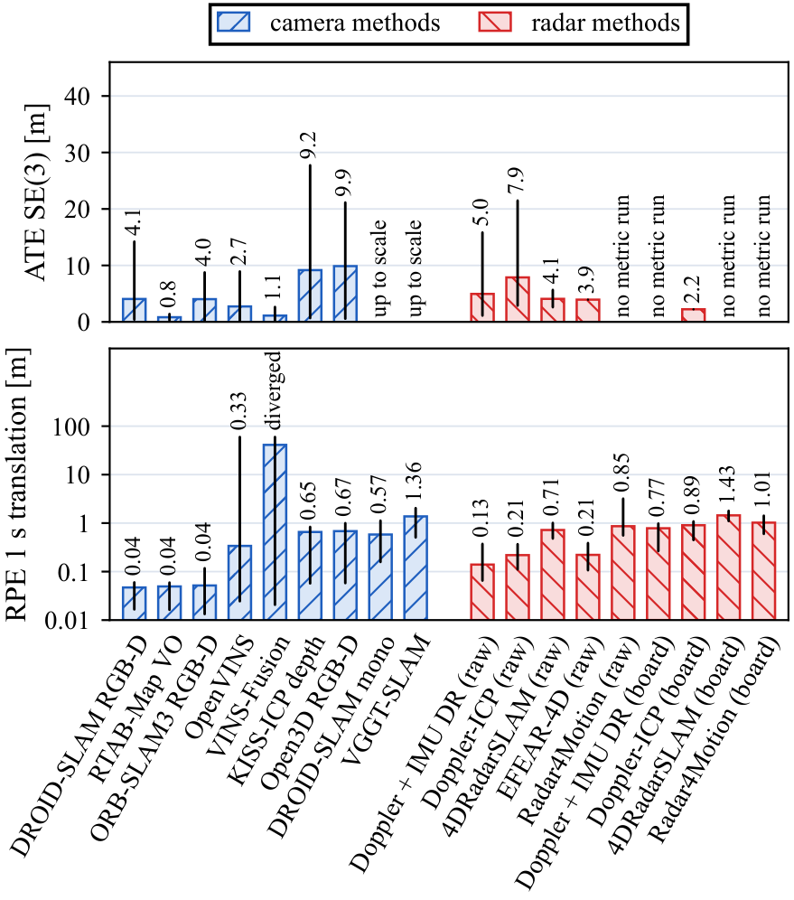
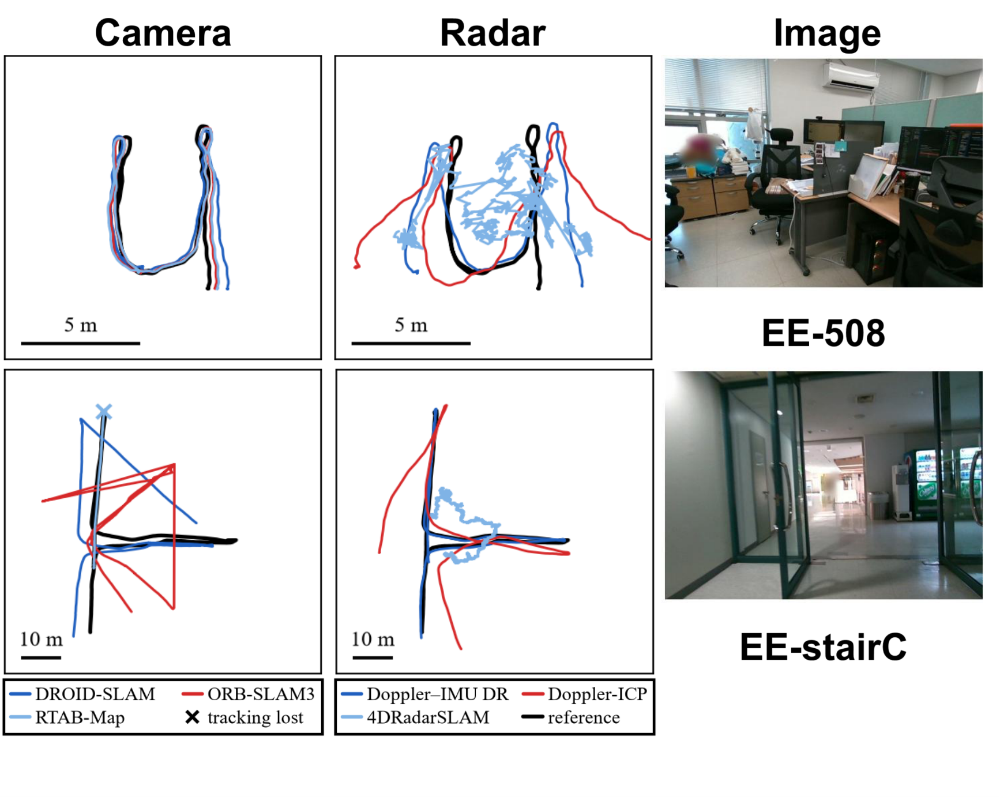
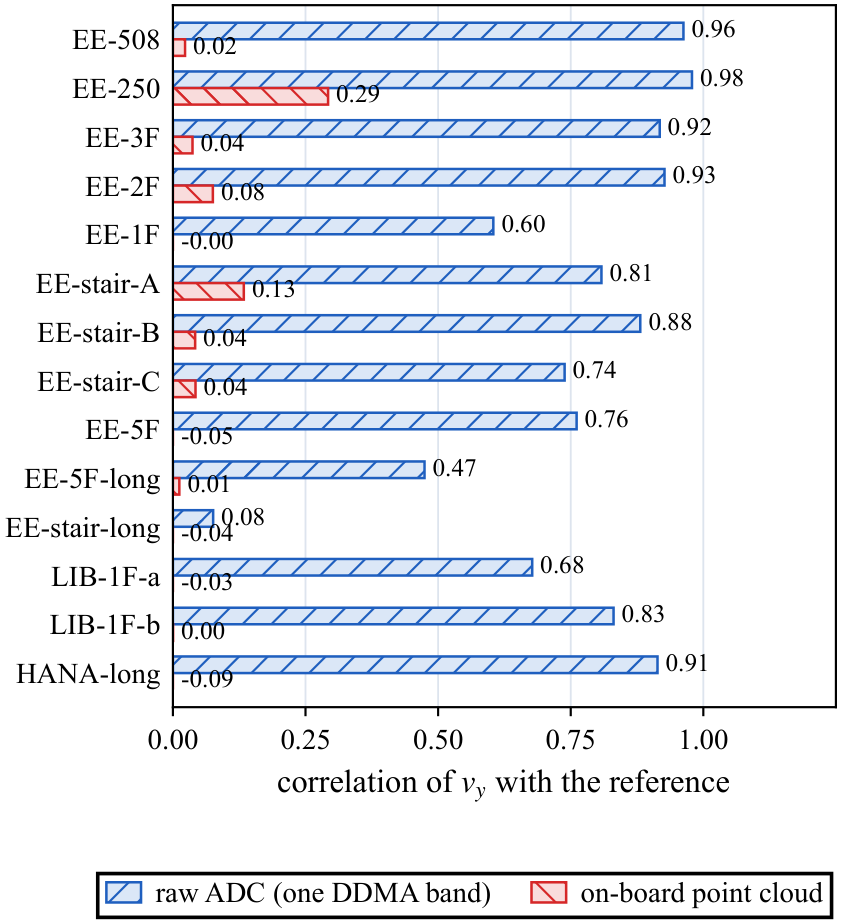
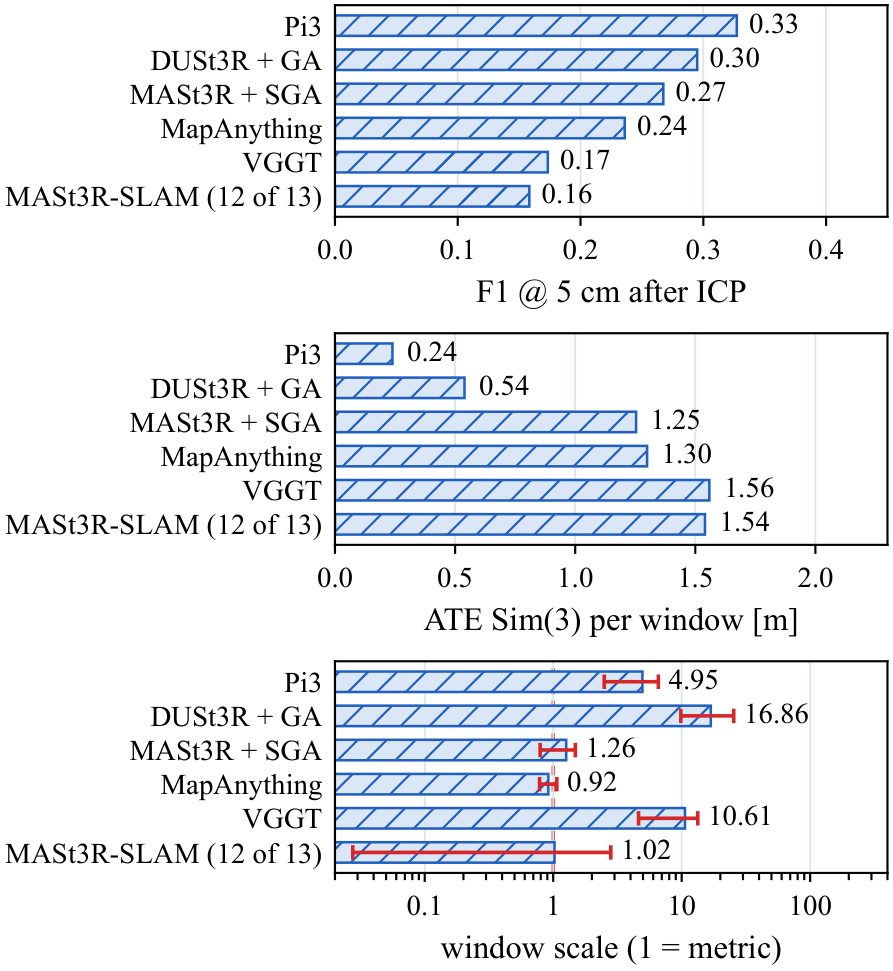
Data availability
The paper is under double-blind review. The dataset and RIVET-tools will be released publicly on Hugging Face after the paper is accepted.
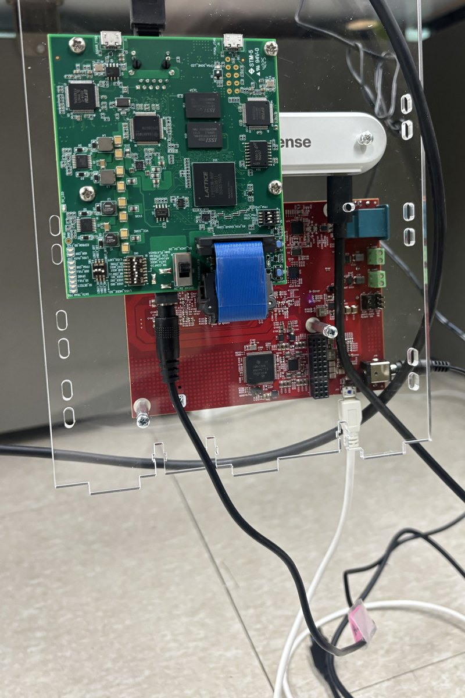
Recorded streams
The collection contains 54,715 raw radar frames, 82,741 color–depth frame pairs, 2.22 million inertial records, and 1.30 million on-board radar detections. Uncompressed ADC storage totals 86.1 GB.
Ethical considerations
The recordings contain indoor color images and incidental human presence. Illustrative scene images use person masking and blur to reduce identifiability. Before public release, the recordings will undergo a review of identifiable people, visible personal information, and location-sensitive content, with appropriate redaction of the distributed images.
Intended use
The dataset and toolkit are intended for research on sensing and spatial perception.